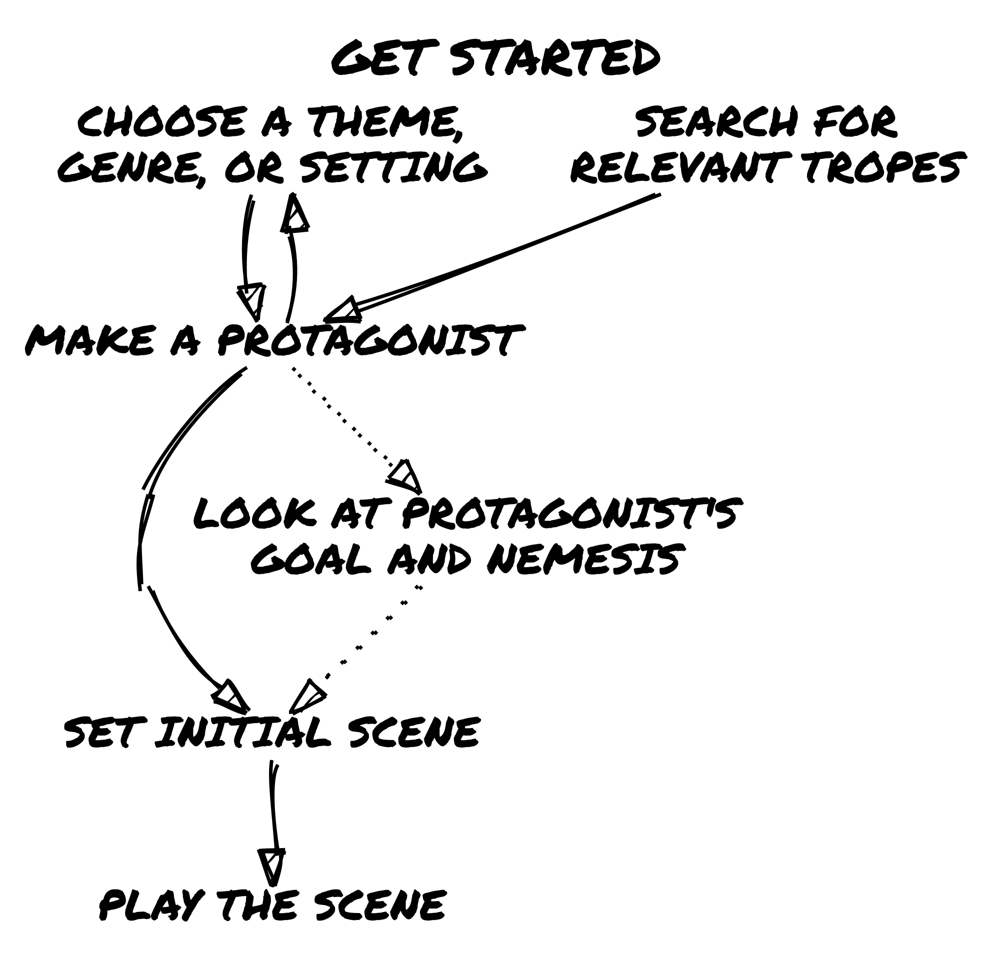
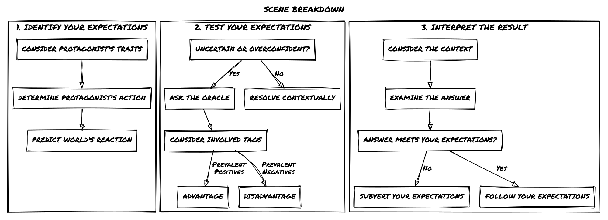
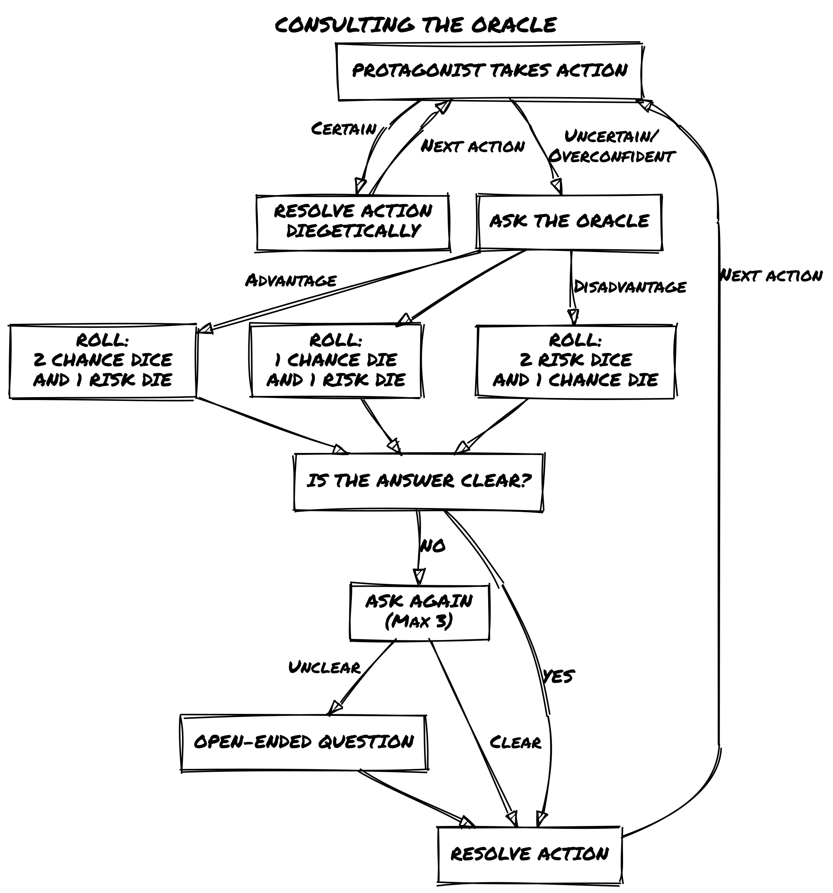
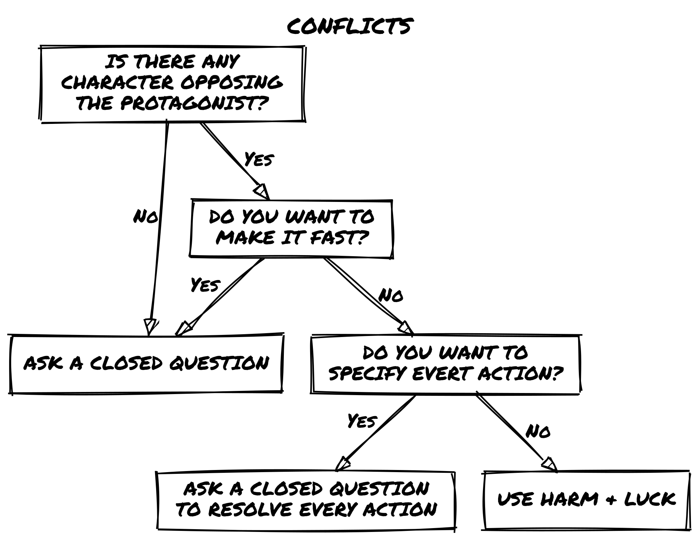

Loner - Core Rules 3rd Edition
Loner - Core Rules 3rd Edition
What is Loner?
Loner is a minimalist solo role-playing game. It is designed for a single character — your Protagonist — who will navigate an unfolding story driven by your choices and an unpredictable Oracle.
Unlike structured solo adventures with pre-set paths, Loner allows you to shape your own narrative dynamically. Instead of choosing from pre-set outcomes, you ask the Oracle questions, interpret its cryptic answers, and weave unexpected twists into your journey.The game is improvisational, emergent, and surprising.
Every session of Loner is a blend of structure and unpredictability.You make choices, test assumptions, and occasionally find that the world has different plans than you expected. When that happens, it’s time to adapt — and let the story take you somewhere new.
Loner follows these design principles:
- Portable – All you need is a few six-sided dice, a way to write things down, and your imagination.
- Rules-Light – With just one core mechanic, Loner is easy to learn and quick to play.
- Tag-Based – Characters, events, and objects are defined descriptively rather than numerically.
- Emergent & Open-Ended – There are no pre-written stories; every session generates its own narrative.
The game is designed for quick, fluid storytelling without tactical complexity or number crunching. You can play as a lone wanderer in a ruined world, a spy on the run, or a rogue AI navigating cyberspace. Loner adapts to your vision.
What is a role-playing game?
A role-playing game (RPG) is a storytelling experience where you take on the role of a character and make decisions that shape their journey. Typically, RPGs are played with more than one person and a game master (GM) who creates challenges and controls the game world. However, in a solo RPG like Loner, you play the role of both the player and the storyteller.
How Loner Is Different
Unlike other RPGs or gamebooks with predefined choices, Loner is an emergent narrative game. You create the story as you play. Instead of following a script, you ask the Oracle closed questions (Yes/No), which makes the story more uncertain and surprising. This creates an unpredictable story.
The game world isn’t set in stone from the start; it responds to your character’s actions, motivations, and circumstances as the game progresses. You set the stage, the Oracle twists fate, and together, they shape a unique adventure every time you play.
Playing Safely
When you play alone, you have complete control over your experience. Loner lets you explore any story, but you also set the limits. Some themes might be intense or emotionally challenging. If they are, adjust them as needed. Take breaks, change the focus, or step away if something feels uncomfortable. The game exists to help you express your creativity; it’s not trying to make you feel distressed.
Since you’re the only player, you don’t need formal safety tools like in group RPGs. Instead, follow one simple rule: If a scene makes you uncomfortable, change it. You can rewind, reframe, or step back entirely.
The goal of Loner is to enjoy the journey, not force yourself through anything that doesn’t feel right.
What You Need to Play
To play Loner, you only need a few basic tools:
- 4 six-sided dice (d6s) – two pairs of different colors.
- Paper and writing tools – a scrap sheet and a pencil work fine, but index cards or sticky notes can help.
- Character sheet – use the one provided at the back of this book or a simple notecard.
Optional but useful:
- Notebook – Loner isn’t a journaling game, but you might want to jot down notes about characters, locations, and ongoing storylines. This helps keep things consistent when you play more than once.
That’s it! There is no rulebook to memorize, no stacks of materials — just a handful of dice and your imagination.
Choose a Genre or Setting
Every Loner adventure takes place in a different imaginary world. You get to choose the world before you play. This can be:
- A setting from your favorite TV series, book, or RPG.
- A genre you already love or one you’re curious to explore.
- A world built from randomly generated tropes.
If you need inspiration:
- Look up trope lists (search online for common themes in fiction).
- Use the Adventure Packs found later in this book.
- Let your character shape the world — define them first, then build the setting around them.
There’s no right or wrong way to do it. The story will take shape as you play, whether you start with the world or the character.
Creating Your Protagonist
Your character — the Protagonist — is the most important part of your story. They don’t have statistics; instead, they are defined by descriptive traits that shape how they interact with the world.
Step-by-Step Character Creation
- Choose a Name – Pick a name that fits the tone and setting of your story.
- Define a Concept – Summarize your character in a short phrase.
- Select Two Skills – Unique abilities or expertise.
- Choose a Frailty – A weakness, flaw, or personal struggle.
- Pick Two Pieces of Gear – Specialized equipment relevant to the setting.
- Set a Goal & Motive – Define what your Protagonist is trying to achieve and why.
- Identify a Nemesis (Optional) – A rival, enemy, or opposing force.
- Start with 6 Luck – it’s your ability to avoid failure and resets after conflicts.
What Makes a Good Concept?
A Concept is like a label for your character. It tells you what they are in just one sentence. The best concepts are evocative and concise, giving an immediate sense of personality, role, or history.
✅ Good 📌 Examples:
- Cunning Bounty Hunter – suggests expertise in tracking and deception.
- Haunted Scholar – suggests knowledge, but also a burden.
- Exiled Warlock – hints at power and a troubled past.
❌ Weak 📌 Examples:
- Strong Fighter – too generic. What makes them unique?
- Heroic Person – not specific enough. What do they actually do?
- Jack of All Trades – vague, doesn’t provide a strong identity.
Think of the Concept as your elevator pitch — it should tell you, at a glance, who this character is.
What Makes a Good Skill?
Skills in Loner are qualitative rather than numerical. Instead of bonuses or stats, a Skill is a descriptor that grants narrative permission — it tells you what your character is capable of doing.
✅ Good 📌 Examples:
- Engine Whisperer – suggests a deep, almost intuitive understanding of mechanics.
- Shadow Walker – implies stealth and movement in darkness.
- Tactician’s Mind – allows for strategic thinking and planning.
❌ Weak 📌 Examples:
- Strong – too broad; what kind of strength?
- Smart – vague; in what area?
- Combat – doesn’t indicate a specialty or style.
When choosing a Skill, ask: How does this change the way my character interacts with the world? If it’s too broad, refine it to something more specific.
Why Goal, Motive, and Nemesis Should Emerge from Play
These three elements are closely related to the story and so it’s best to choose them based on the game’s context instead of picking them from a random list.
- The Goal defines what your character is actively working toward.
- The Motive explains why they pursue it.
- The Nemesis is what stands in their way — this can be a person, an organization, or even an abstract force.
Since Loner is an emergent storytelling game, these should be chosen based on the setting, tone, and first moments of play rather than from a random generator.
✅ If chosen organically:
- The story unfolds naturally, and the Goal is driven by in-game events.
- The Motive has weight because it emerges from play.
- The Nemesis grows into a real antagonist with personal stakes.
❌ If chosen randomly:
- Your character might have a Goal that feels disconnected from the setting.
- The Motive might be unclear or unimportant.
- A Nemesis that doesn’t fit the world weakens the tension of the story.
| Approach | Outcome |
|---|---|
| ✅ Organically | The Goal, Motive, and Nemesis evolve naturally from in-game events, making them more meaningful and immersive. |
| ❌ Randomly | These elements may feel disconnected from the story, weakening character depth and narrative stakes. |
📌 Example
Zahra Nakajima Concept: Witty Street Cat
Skills: Streetwise, Nimble
Frailty: Merciful
Gear: Knife, Low O2 Supplement
Goal: Obtain unknown technology to save her planet
Motive: She feels responsible for her home’s survival
Nemesis: The Naturalist Order, a group that seeks to suppress technological progress
Luck: 6
Here, Zahra’s Goal and Nemesis aren’t arbitrary — they come from the world and story she inhabits. Her Motive ties into her personality, creating emotional stakes that make the journey meaningful.
If you’re unsure about your Goal, Motive, or Nemesis, start playing! Let the first scenes shape these elements instead of deciding everything upfront.
Everything is a Character
In Loner, anything that plays a meaningful role in the story — whether a person, a spaceship, or an ancient curse — is treated like a character. This means the same descriptive approach used for your Protagonist applies to everything that matters in the game world.
Living Characters (NPCs, Foes, Organizations)
Any person, creature, or faction that has a distinct role in the story follows the same structure as the Protagonist:
- They have a Concept that defines their identity.
- They may have Skills and Frailties, just like the Protagonist.
- They may have Goals, Motives, or Nemeses.
- They interact with the world through Tags, influencing how scenes unfold.
📌 Example
Caine Trask Concept: Ruthless Lawman
Skills: Tracker, Quick Draw
Frailty: Bound by Honor
Gear: Plasma Revolver, High-End Surveillance Drone
Goal: Capture fugitives and criminals at any cost
Motive: Believes justice is absolute, no room for negotiation
Nemesis: The Shadow Syndicate, a criminal network that always slips through his fingers
Luck: 6
Non-Living Characters (Objects, Vehicles, Curses)
Not everything in Loner is alive, but if something actively influences the story, it is treated as a character. Unlike living beings:
- They have a Concept, Skills and Frailties.
- They don’t have Goals, Motives, or Nemeses.
- They are defined by their function and impact on the story.
- They still use Tags to shape how they are used or overcome.
📌 Example
The Century Skylark
- Concept: Spacecraft in bad shape
- Skills: Hyperjump Drive, Camouflage Circuits
- Frailty: Midlife Courier
- Luck: 6
Before the Adventure
You can jump straight into the game, but it’s a good idea to take a little time to set the stage. This can make your adventure more immersive and interconnected.
Build a Web of Connections
- Your Nemesis is an NPC – If you’ve defined a Nemesis, you’ve already created a key Non-Player Character (NPC). Write down their details separately — you’ll likely cross paths again.
- Allies and Contacts – Does your Protagonist have friends, mentors, or rivals? List them out with a short description so they can appear organically during play.
Preparing in advance will help your world feel more realistic and connected as you play.
Track Your World
Beyond characters, consider noting:
- Important Locations – Places that might be revisited, such as a criminal hideout, a hidden temple, or a war-torn city.
- Major Events – Significant events that shape the story, such as a rebellion or an impending disaster.
These don’t have to be fully detailed — just quick notes that give you something to draw from when the story takes unexpected turns.
A little preparation goes a long way, ensuring your world feels rich and interconnected as you play.
Start Your Game
Every great adventure begins somewhere. In Loner, you define the starting scene by deciding where your Protagonist is right now and what immediate challenge they face.
There are two main ways to begin:
1. Drop into the Action (Dramatic Scene)
Start in the middle of a tense, dynamic moment — your Protagonist is already escaping, fighting, negotiating, or uncovering a secret.
✅ Builds momentum immediately — the story starts in motion rather than in planning.
✅ Easy to improvise — the scene itself suggests the next logical actions.
📌 Example:
> Your Protagonist is running through a neon-lit alley, gunfire behind them. A rival bounty hunter is closing in — do they find cover in time?
This technique is borrowed from fiction and film, where beginning with action hooks the audience. Imagine the opening of Raiders of the Lost Ark: Indiana Jones is already inside the temple, dodging traps. Much more engaging than starting with him reading a book at home!
💡 Tip: A dramatic opening doesn’t need combat — it just needs tension, urgency, or a clear conflict to resolve.
2. Frame the Adventure First
If you prefer structure, use the 5W+H method (Who, What, Why, Where, How, plus Obstacle). This gives you a mission framework before jumping into the story.
Ask:
- Who? (Who initiates the story?)
- What? (What mission or task is at hand?)
- Why? (Why does the Protagonist care?)
- Where? (Where does the adventure take place?)
- How? (How does the story begin — what sets events into motion?)
- Obstacle? (What immediately stands in the way?)
| D6 | Who? Proposer |
What? Mission |
Why? Incentive |
Where? Target |
How? Starting Point |
Obstacle? Complication |
|---|---|---|---|---|---|---|
| 1 | Authority | Rescue | Help | Person | Casual encounter | Opposition |
| 2 | Organization | Protection | Fortune | Group | Old acquaintance | Deception |
| 3 | Ally (friend, relative) | Exploit | Coercion | Treasure | Rumors | Environment |
| 4 | Mentor | Explore | Impulse | Location | Capture | Disguise |
| 5 | Help-seeker | Escape | Ambition | McGuffin | Mishap | Time |
| 6 | Blackmailer | Pursuit | Revenge | Confession | Object (map, letter) | Space |
✅ Gives a concrete premise — your Protagonist has a clear goal from the start.
✅ Helps with structured play — you know what’s at stake before the first scene.
Who? Mentor
What? Exploit
Why? Help
Where? McGuffin
How? Rumors
Obstacle? TimeTobias Wethern took Zahra under his wing when her parents died. That’s why she can’t say no to him now. Tobias wants Zahra to steal a datapad from the Leton Corporation’s subsidiary. He doesn’t know exactly where it’s stored, but in 24 hours, security will move it to another location — so there’s no time to waste.
Which One Should You Use?
📌 Dramatic Scene: Best if you want to jump right in and discover the story as you play.
📌 Framed Setup: Best if you want a structured mission goal before the first scene.
You don’t have to choose just one — you can combine both:
- Use a frame to set up the mission.
- Then, start with a dramatic scene.
📌 Example: You frame a mission (steal a data drive from a rival hacker) — but instead of starting at the planning stage, you drop into the action (the Protagonist is already inside the hacker’s apartment, alarms blaring!).
Both methods serve different play styles, but together they create a strong opening for any adventure.
Let the Story Unfold
Once you’ve set up the first scene, start playing! The Oracle will guide what happens next, shaping the twists and surprises along the way.

Keep the Action in Motion
A game of Loner is made up of a series of scenes. Each scene is a different moment in time where something meaningful happens.
Each scene has a short-term goal. A short-term goal is a single action, challenge, or discovery that moves the story forward.
The Three-Step Scene Flow
Every scene follows a natural rhythm:
- Set Your Expectation – What does your Protagonist want to achieve? Look at their traits, goal, and motivation to determine their action. How do you expect the world to react?
- Test the Uncertainty – If an outcome isn’t obvious (or if overconfidence tempts fate), consult the Oracle with a Yes/No question. Use Tags to determine if the Protagonist has an Advantage or Disadvantage.
- Interpret the Result – The Oracle’s answer may confirm your expectations or subvert them. How does this outcome reshape the scene? What new possibilities emerge?
At first, you may want to follow this structure deliberately, but with practice, it will become second nature — allowing the story to flow naturally.

Identify Your Expectations
Your Protagonist’s traits, goals, and motivations shape how they interact with the world. In any given scene, you will naturally have expectations about what makes sense based on these factors.
Expectations help guide the story, but they don’t always require a roll. If an action has an obvious and logical outcome, let it happen. However, when there’s uncertainty, risk, or the chance for surprise, it’s time to test that expectation by consulting the Oracle.
When to Ask the Oracle
- If the outcome is obvious → No need to roll; the scene unfolds as expected.
- If the outcome is uncertain or risky → Ask the Oracle a Yes/No question.
- If you want an unexpected twist → Ask even when you’re fairly confident — sometimes reality doesn’t behave as expected!
📌 Example 1: No Roll Needed
Zahra sneaks into the Leton Corporation subsidiary. She knows from prior surveillance that security is lighter at night. Since this aligns with logic and expectations, the scene plays out: Zahra gets inside undetected without needing to ask the Oracle.
📌 Example 2: Asking the Oracle for Uncertainty
Zahra crawls through the ventilation ducts, expecting them to be unguarded. But what if there’s a security alarm hidden inside? That’s uncertain — so she asks the Oracle:
“Is there an alarm in the ducts?” and rolls.
📌 Example 3: Asking the Oracle for an Unexpected Twist
Zahra makes her way to the server room. She knows from a stolen security map that the door requires only a simple override — but what if she’s wrong? She asks the Oracle:
“Is the security system exactly as expected?”
The answer is No, and… The lock has been upgraded recently, requiring biometric clearance — and the real surprise? Security has just started their midnight patrol.
Consulting the Oracle
Whenever you face uncertainty in the story, you’ll ask the Oracle a Yes/No question and roll to determine the outcome.
What You Need
You’ll need:
✅ 2d6 in one color (Chance Dice)
✅ 2d6 in another color (Risk Dice)
How to Roll
When you consult the Oracle, roll one Chance Die and one Risk Die, then follow these steps:
Step 1: Compare the Dice
🔹 Is the Chance Die higher? → Yes (Success)
🔹 Is the Risk Die higher? → No (Failure)
🔹 Are both dice equal? → Yes, but… (Success with a complication, +1 to the Twist Counter)
Step 2: Check for Modifiers
📉 Are both dice <= 3?
➝ Add but… (Something goes wrong or adds tension.)
📈 Are both dice >= 4?
➝ Add and… (Something extra goes in your favor.)
Resolution Breakdown
🟢 Chance Die > Risk Die → “Yes”
✅ Both dice <= 3 → “Yes, but…” (Success with a drawback)
✅ Both dice >= 4 → “Yes, and…” (Success with a bonus)
🔴 Risk Die > Chance Die → “No”
❌ Both dice <= 3 → “No, but…” (Failure, but something positive happens)
❌ Both dice >= 4 → “No, and…” (Failure with extra consequences)
⚖️ Both Dice Equal → “Yes, but…” (+1 Twist Counter!)
📌 Example: Breaking In
Zahra wants to force open a security hatch without triggering an alarm.
She asks the Oracle: “Does Zahra manage to force the hatch?”🎲 Rolls: Chance Die (5), Risk Die (4)
✅ Chance Die is higher → The answer is Yes (she succeeds).
✅ Both dice are >= 4 → Add And… (something extra goes her way).Outcome:
Zahra forces the hatch without setting off an alarm, and she also finds a map of the facility inside.
If the Risk Die had been 3 instead of 4, the answer would have been a plain Yes, without the extra benefit.
Advantage and Disadvantage
Sometimes, the situation or a Tag will grant an Advantage or Disadvantage when consulting the Oracle. This reflects how favorable or challenging the circumstances are for the Protagonist.
How It Works
- Advantage → Add an extra Chance Die 🎲 (positive circumstances, useful skills, favorable conditions).
- Disadvantage → Add an extra Risk Die 🎲 (hindrances, complications, difficult conditions).
- In both cases, roll all dice of that type and keep only the highest one.
📌 📌 Example of Advantage:
> Zahra is attempting to charm a suspicious merchant into revealing illegal goods. She has the Tag: Smooth Talker, so she rolls with Advantage (two Chance Dice, one Risk Die).
📌 📌 Example of Disadvantage:
> Zahra is hacking a corporate databank under pressure, with no expertise and a security system against her. She rolls with Disadvantage (two Risk Dice, one Chance Die).
Important!
⚠️ Tags are not numbers! Use them intuitively, not as rigid bonuses or penalties. The goal is to keep the game flowing, not to overanalyze every situation.
Instead of treating Tags like numerical modifiers, think narratively:
- Does the situation genuinely give an edge or impose a challenge?
- Is the character leveraging a skill, trait, or circumstance that logically grants an advantage?
- Does an obstacle, flaw, or environmental factor impose a disadvantage?
📌 Example: Hacking the Datapad
Zahra is attempting to hack a secure corporate databank to retrieve classified information. However, she is not a skilled hacker, and the security system is highly advanced.
Evaluating Advantage and Disadvantage
🔹 Tags Favoring Her: None (She has no relevant hacking skills or tools)
🔹 Tags Against Her:
No Hacking Skills (Negative Tag: 1 Disadvantage)
Highly Protected System (Negative Tag: 1 Disadvantage)
Total: Two Negative Tags → She rolls with Disadvantage
Disadvantage means rolling Two Risk Dice and One Chance Die
Rolling the Dice
🎲 Chance Die (5)
🎲 Risk Dice (3), (4) → Keep the highest (4)
📌 Results:
- ✅ Chance Die (5) > Risk Die (4) → Yes (Success!)
- ✅ Both dice are 4 or higher → Add And… (Something extra goes Zahra’s way!).
🚀 Final Outcome:
> Zahra successfully hacks the databank and… she also stumbles upon an encrypted transmission revealing an upcoming covert corporate operation.
Why This System Works
✅ Keeps rolling simple – No need to track excessive modifiers.
✅ Encourages situational storytelling – Instead of stacking numbers, Tags describe why a situation is easy or difficult.
✅ Prevents excessive stacking – One strong Advantage or Disadvantage is enough to shift the outcome.

Interpreting the Oracle
The Oracle provides a simple answer, but your interpretation is what brings it to life. Instead of treating the Oracle as just a mechanic, use it as a narrative driver that pushes the story forward.
| Answer | Outcome |
|---|---|
| Yes, and… | You get what you want + an extra advantage |
| Yes… | You succeed in your action |
| Yes, but… | You succeed, but at a cost |
| No, but… | You fail, but you gain a small compensation |
| No… | You fail |
| No, and… | You fail + something makes it worse |
Making the Results Interesting
✅ Straightforward answers (Yes/No) are useful but can feel flat — use them when the story needs momentum.
✅ Modifiers (but…/and…) add layers of complexity and should push the scene in new, engaging directions.
✅ Tie the answer back to existing story elements — NPCs, locations, or unresolved threads.
By actively interpreting Oracle results rather than just taking them at face value, you ensure that every roll adds tension, depth, or intrigue to the game.
Methods for Interpreting the Oracle
There’s no single way to read an Oracle response. Depending on the context of the scene, you can interpret the result in different ways to shape the outcome dynamically.
1. The Oracle as Intensity
Instead of reading the response as a binary success or failure, treat it as a measure of how well or poorly things go:
| Answer | Intensity of Outcome |
|---|---|
| Yes, and… | Major success (Overwhelming advantage, unexpected bonus) |
| Yes… | Moderate success (Standard outcome, things go as expected) |
| Yes, but… | Success with consequences (Partial victory, unintended complication) |
| No, but… | Failure with compensation (Misses the goal, but something useful happens) |
| No… | Moderate failure (Things go wrong as expected) |
| No, and… | Major failure (Catastrophic mistake, unexpected setback) |
📌 Example: Zahra is sneaking past a security checkpoint.
- 🎲 Yes, and… → Not only does she slip past unnoticed, but she also finds an access key on the floor.
- 🎲 Yes… → She gets past the checkpoint without being seen.
- 🎲 Yes, but… → She gets through, but the guards start a random sweep of the area.
- 🎲 No, but… → She gets caught, but the guards assume she’s just lost rather than an intruder.
- 🎲 No… → She’s spotted, and the alarm is raised.
- 🎲 No, and… → She’s spotted, captured, and now the security system is on full lockdown.
2. The Oracle as a Twist Generator
Instead of a simple success/failure reading, let the Oracle introduce a new element that wasn’t part of your initial expectations.
📌 Example: Zahra tries to hack into a corporate mainframe.
- 🎲 Yes, but… → She gains access, but the files are heavily encrypted, requiring another step.
- 🎲 No, but… → She fails to hack in, but she learns that the mainframe is vulnerable to an external backdoor.
- 🎲 No, and… → Not only does she fail, but she accidentally trips a silent alarm, alerting security.
3. The Oracle as Momentum Control
You can also use the Oracle to determine whether the scene’s tension rises, falls, or stays steady:
| Answer | Scene Momentum |
|---|---|
| Yes, and… | Drives the scene forward with a major development |
| Yes… | Moves the story in a predictable direction |
| Yes, but… | Adds a complication that slows progress |
| No, but… | Shifts the focus to an alternative path |
| No… | Brings the scene to a roadblock |
| No, and… | Escalates the stakes significantly |
📌 Example: Zahra is interrogating an informant.
- 🎲 Yes, and… → The informant cracks immediately and spills everything — and even offers to help.
- 🎲 Yes… → He gives Zahra the information she wants.
- 🎲 Yes, but… → He talks, but some details are unreliable or missing.
- 🎲 No, but… → He refuses to talk, but his reaction suggests he knows something crucial.
- 🎲 No… → He refuses to talk completely.
- 🎲 No, and… → He shuts down and alerts someone to Zahra’s presence.
This interpretation helps control pacing — Yes, and… moves the game forward rapidly, while No, and… forces a dramatic shift.
📌 Example: Expanding the Story with Interpretation
📌 Scenario: Zahra is sneaking into a research facility.
📌 Question: “Does she make it inside unnoticed?”
📌 🎲 Oracle Answer: No, but…
Instead of a simple failure, let’s apply different interpretations:
✅ As Intensity: She’s seen, but only by a single distracted guard, not the entire security team.
✅ As a Twist: She’s caught, but the person who finds her is an old ally instead of an enemy.
✅ As Momentum Control: She’s detected, but instead of triggering an alarm, the guards begin searching, giving her a brief window to hide.
💡 By using flexible interpretations, the Oracle doesn’t just dictate what happens — it guides the story in meaningful ways.
The Oracle as a Narrative Tool
✅ Don’t treat Oracle results as binary. Instead, use them to add nuance to your game.
✅ Use context to shape interpretation. A No, and… in a combat scene will feel different than in a conversation.
✅ Experiment with different methods. Try using the Oracle as intensity, momentum, or a twist generator to keep your story fresh and dynamic.
Sibylline Responses
Sometimes, the Oracle’s answer won’t make immediate sense in the context of your scene. Instead of getting stuck, follow these steps to keep the story moving.
How to Handle a Confusing Answer
- Don’t Overquestion It – Avoid asking too many follow-ups to force a “logical” result. Three Yes/No questions should be enough — if you’re still unsure, move on.
- Reframe the Answer – Think about the broader situation. Could this result introduce a hidden complication or suggest a deeper truth?
- Use an Open-Ended Question – If you’re still lost, roll on an inspiration table or ask something like:
- “What unexpected factor is at play?”
- “What does this reveal that I didn’t consider?”
- “What unexpected factor is at play?”
- Default to “Yes, but…” – If nothing else fits, treat the response as Yes, but… and introduce a minor complication that makes the answer work.
📌 Example: Dealing with a Strange Answer
Question: “Is the informant still at the bar?”
🎲 Oracle Answer: No, and…❌ This doesn’t make sense — why would they suddenly leave? Instead of getting stuck:
✅ Reframing the Answer:
- Maybe someone tipped them off to danger?
- Maybe they were kidnapped?
- Maybe “No, and…” doesn’t mean they left — maybe they were never real to begin with?
Final Interpretation:
The informant is gone, and… the bartender nervously avoids eye contact, suggesting at foul play. Now the story moves forward with a new layer of intrigue.
Twist Counter
The Twist Counter represents rising tension in the narrative. Every time you roll doubles (both dice show the same number), you:
✅ Add 1 to the Twist Counter.
✅ If the Counter reaches 3, a Twist occurs and resets the Counter to 0.
If the Counter is below 3, treat the result as “Yes, but…” instead of triggering a twist.
📌 Example: A Ticking Tension
Zahra is trying to decrypt stolen files to uncover evidence against a powerful corporation. She asks the Oracle:
“Do the files contain evidence of illegal activities?”
🎲 Rolls: (4) [4] → Doubles!
✅ The answer is “Yes, but…” → The files do contain illegal activity…
✅ +1 to the Twist Counter (which was already at 2) → The Twist triggers!
Twist Triggered: The Counter resets to 0, and we roll 2d6 on the Twist Table…
🎲 Twist Roll: (1, 5) → “A third party” + “Changes the goal”
Interpretation: Zahra now has the evidence — but suddenly, a corporate agent contacts her with an offer:
“You can expose us… or take a deal that changes your life.”
Determine the Twist
When the Twist Counter reaches 3, roll 2d6 on the table below:
| D6 | Subject | Action |
|---|---|---|
| 1 | A third party | Appears |
| 2 | The hero | Alters the location |
| 3 | An encounter | Helps the hero |
| 4 | A physical event | Hinders the hero |
| 5 | An emotional event | Changes the goal |
| 6 | An object | Ends the scene |
Interpret the two-word result within the context of the current scene. Twists should shake up the story, forcing the Protagonist to adapt.
📌 Example: How a Twist Changes the Story
Scenario: Zahra is infiltrating a high-tech facility to steal corporate secrets.
She asks: “Can she reach the secure server unnoticed?”
🎲 Rolls: (3) [3] → Doubles! → Twist Counter reaches 3 → A Twist occurs!🎲 Twist Roll: (4, 2) → “A physical event” + “Alters the location”
Interpretation: Just as Zahra nears the server room, an explosion rocks the building. Security scrambles, alarms blare — but now the mission has changed. Instead of sneaking in, she needs to escape the collapsing structure with whatever data she can grab.
Why the Twist Counter Matters
The Twist Counter keeps Loner full of surprises, ensuring no two stories play out the same way.
✅ Builds tension naturally — the more doubles you roll, the closer a twist becomes.
✅ Prevents predictable storytelling — forcing the game world to react dynamically.
✅ Encourages creative interpretation — every twist reshapes the adventure in unexpected ways.
Conflicts
A Conflict occurs whenever two or more forces oppose each other, whether through combat, competition, persuasion, or resistance.
Conflicts are not limited to physical fights — they also include:
- Verbal duels (intimidation, negotiations, debates)
- Tactical contests (chases, sabotage, heists)
- Mental struggles (resisting psychic influence, enduring torture)
- Vehicle battles (dogfights, ship-to-ship combat)
Ways to Resolve a Conflict
There are three approaches to resolving conflicts, depending on how much detail you want:
- Single Yes/No Question – Ask the Oracle whether the Protagonist succeeds or fails.
- Series of Yes/No Questions – Break the conflict into key actions and resolve them one by one.
- Harm & Luck System – Track Luck loss to determine when a character is overcome.
⚠️ The Twist Counter does NOT apply to Harm & Luck! The Oracle still drives unexpected outcomes, but Luck-based conflicts rely on direct dice rolls.

Resolving Conflicts by Key Actions
Instead of using the Harm & Luck system, you can resolve conflicts through a series of closed Oracle questions, determining the outcome of each key action in the scene.
This method is a middle ground between:
✅ A single-question conflict resolution (“Do I win the fight?”), which can be too abrupt.
✅ The Harm & Luck system, which introduces attrition-based resolution but may feel too structured.
How It Works
1️⃣ Describe each action as a distinct moment and ask the Oracle whether it succeeds or fails.
2️⃣ Use the result modifiers (“but…”/“and…”) to introduce twists and consequences.
3️⃣ Let the outcome shape the next step in the scene — without needing to track Luck loss.
📌 Example: A Firefight in an Abandoned Factory
Zahra is caught in a gunfight inside a dilapidated chemical plant, exchanging fire with a bounty hunter. Instead of tracking Luck, she resolves the battle action by action:
🔹 First Action:
🗣️ “Can I take cover behind the wall?”
🎲 Yes, but…
✅ She reaches cover, but her line of fire is obstructed — giving her a Disadvantage.
🔹 Second Action:
🗣️ “I aim at the opponent, can I get the first shot in?”
🎲 No, but…
❌ She misses — but the bounty hunter is forced to move, breaking his own line of fire. (Now Zahra gains an Advantage.)
🔹 Final Action:
🗣️ “I shoot a slag container above him. Do I hit it?”
🎲 Yes, and…
✅ The shot lands perfectly — the container crashes down, knocking the bounty hunter out cold.
Why Use This Method?
✅ Creates cinematic, fast-paced encounters — each action unfolds dynamically instead of tracking damage.
✅ Encourages creative solutions — instead of hit point attrition, players find ways to shift the fight in their favor.
✅ Adds unpredictability — since each move is a separate Oracle roll, conflicts can take unexpected turns.
When to Use It
Use this approach when you want fluid, improvisational conflict resolution, focusing on tactical decisions and momentum rather than a structured back-and-forth fight.
It’s especially great for:
- Chases and heists where every move shifts the stakes.
- Tense negotiations where each argument changes the power dynamic.
- Battles where the environment plays a major role.
This system keeps conflicts fast, reactive, and engaging, making every choice matter without tracking Luck points. 🚀
Handling Conflicts with Multiple Opponents
Not all conflicts involve a one-on-one confrontation — sometimes the Protagonist must face multiple adversaries at once. How this plays out depends on narrative context and the desired level of complexity.
Option 1: Treat the Opponents as a Single Entity
📌 Best for: Mobs, Minions, or Coordinated Groups
One simple way to manage multiple opponents is to treat them as a single “character” with:
- A shared Concept and Skills (Elite Mercenary Squad, Swarm of Cultists, Riot Police Formation).
- A single Luck pool that represents their overall strength.
- A Fragility related to their numbers — the larger the group, the harder it may be to coordinate their actions effectively.
✅ Pros: Keeps the encounter fast-paced and prevents excessive dice rolling.
❌ Cons: Doesn’t emphasize individual threats — treats the opposition as an abstract challenge.
Option 2: Handle Opponents as Separate Entities
📌 Best for: Named Villains, Small Groups with Unique Roles, Rival Teams
If each opponent is distinct, resolve their actions individually, using:
- Separate Luck pools for key adversaries (a commander, a rival bounty hunter, an elite duelist).
- A mix of conflict resolution methods — you might resolve the mooks as a single entity but use full Harm & Luck for the boss fight.
- Oracle rolls to dictate group behavior (Do they fight as a unit? Do they break formation?).
✅ Pros: Creates a more tactical, cinematic encounter.
❌ Cons: Can slow down play if not streamlined.
📌 Example: A Fight Against a Mercenary Squad
Zahra is ambushed by five corporate mercenaries. Instead of rolling for each one separately, they are treated as a single unit with the Concept Tactical Strike Team and Skill Coordinated Maneuvers.
🎲 The Oracle determines their strategy: Do they fan out to surround her? Do they immediately open fire?
As the fight unfolds:
✅ Zahra’s attacks whittle down their shared Luck pool.
✅ If she exploits their Fragility (poor coordination under stress), she can force them into disarray instead of fighting to the last.
Why Use These Methods?
✅ Keeps group encounters manageable — rolling separately for a large group can slow the game down.
✅ Maintains narrative flow — players can focus on the tension of the scene rather than excessive mechanics.
✅ Gives flexibility — whether treating enemies as a unit or separate threats, the system adapts to the situation.
The key takeaway? Conflicts should serve the story, not bog it down. Whether you treat opponents as a swarm, a unit, or distinct characters, the goal is to keep the action moving while making the challenge feel real.
Harm & Luck
If a conflict involves risk and attrition, you can track Luck loss to determine the outcome.
🎲 When engaging in a conflict:
- Roll as normal to determine if the Protagonist gets what they want.
- If they succeed, they deal damage. If they fail, they take damage.
📉 Luck represents resilience, endurance, and fortune. A character who runs out of Luck is defeated — but what that means depends on the context:
- In a brawl, they might be knocked out.
- In a verbal duel, they might concede the argument.
- In a chase, they might lose their target.
How Luck Loss Works
Use the following table to determine how much Luck damage is inflicted:
| Oracle Result | Luck Damage |
|---|---|
| Yes, and… | Deal 3 damage to opponent |
| Yes… | Deal 2 damage to opponent |
| Yes, but… | Deal 1 damage to opponent |
| No, but… | Take 1 damage from opponent |
| No… | Take 2 damage from opponent |
| No, and… | Take 3 damage from opponent |
🛑 Reaching 0 Luck means the character has lost the conflict!
At 0 Luck, the story dictates the consequences, like:
- Are they captured?
- Are they severely injured?
- Do they retreat and regroup?
📌 Example: Alley Fight
Zahra faces a thug in an alley. The thug has the Tags Martial Artist, Hand-to-Hand Combat, Feline, and Short.
🎲 Zahra attacks with a knife and rolls (5) (6) [4] → “Yes, and…”
✅ She succeeds and deals 3 damage! (Thug’s Luck drops from 6 to 3)🎲 The thug counterattacks with a kick and rolls (3) (2) [2] → “Yes, but…”
✅ Zahra takes 1 damage! (Her Luck drops from 6 to 5)Who will win? The fight continues!
Why Use the Harm & Luck System?
✅ Keeps conflicts dynamic – Instead of just Yes/No answers, Luck loss adds a progressive sense of tension.
✅ Flexible outcomes – Losing a conflict doesn’t always mean death; it means the story takes a new turn.
✅ Scales to different scenarios – Whether it’s a duel, a chase, or a negotiation, Luck tracks when a character is pushed beyond their limits.
Luck and Narrative Consequences
Luck does not function as a health bar — it represents a character’s ability to evade misfortune, manipulate fate, or endure challenges. When Luck runs out, it signals a shift in the story, not necessarily injury or death.
What Happens When a Character Reaches 0 Luck?
📌 Losing all Luck doesn’t mean immediate death — instead, it signals a dramatic turning point. The Oracle and story context should guide what happens next.
- In Combat? → The character might be captured, knocked unconscious, or forced to flee.
- In a Chase? → They lose their target or get cornered.
- In a Debate? → They are outmaneuvered and must concede or face consequences.
- In a Heist? → They trigger an alarm or leave behind crucial evidence.
The moment Luck reaches zero, stop rolling — the conflict has reached its conclusion. Now, ask: What makes sense for the story?
📌 Example: When Luck Runs Out
Zahra is dueling a bounty hunter in the ruins of an abandoned station.
🎲 The fight escalates, and Zahra’s Luck drops to 0. The Oracle will no longer determine small exchanges — her fate is sealed.
✅ Instead of dying outright, she is disarmed and pinned against a bulkhead. The bounty hunter smirks, dragging her toward his ship — now the real challenge begins: how does Zahra escape?
🛑 This keeps the story moving instead of ending with a simple “you lose.” Running out of Luck is not the end — it’s a turning point.
Embracing Luck as a Story Mechanic
✅ Luck keeps conflicts cinematic. Instead of tracking minor injuries, it builds tension until a definitive outcome occurs.
✅ It ensures conflicts don’t drag on forever. Once Luck is depleted, the story shifts direction.
✅ It allows for unexpected twists. Losing Luck can introduce new obstacles, bargains, or unintended consequences.
When using the Harm & Luck system, think less about “how much damage does this do?” and more about “how does this moment change the story?”
Determine the Mood of the Next Scene
At the end of a scene, you might already know where the story is headed. However, if you’re unsure, roll 1d6 to determine the overall mood and focus of the next scene.
| 🎲 D6 Roll | Next Scene Type | What It Means |
|---|---|---|
| 1-3 | Dramatic Scene | Raises stakes, adds new obstacles or dangers. |
| 4-5 | Quiet Scene | A pause to recover, reflect, or make plans. |
| 6 | Meanwhile… | Shifts focus to a different perspective or subplot. |
Types of Scenes Explained
🔴 Dramatic Scene (1-3)
The action and tension continue. The situation worsens, new obstacles emerge, or an unexpected event forces the Protagonist to adapt.
✅ Use when:
- A villain makes their move.
- The environment introduces new dangers.
- The Protagonist’s plans start to unravel.
🟢 Quiet Scene (4-5)
The calm before the storm. The Protagonist can rest, regroup, and prepare for what comes next. Conversations, character development, and small discoveries take center stage.
✅ Use when:
- The Protagonist needs to heal, gather intel, or plan.
- Relationships deepen or shift.
- The world reacts to past events without immediate conflict.
🔄 Meanwhile Scene (6)
The focus shifts away from the Protagonist, cutting to villains, allies, or unseen forces at play. This adds depth to the world and introduces new threats or opportunities before the Protagonist learns about them.
✅ Use for:
- A villain’s next move (the assassin gets their orders).
- A subplot progressing (the rebellion plans its next strike).
- A shift in the world (a storm brews on the horizon).
📌 Example: A Twisting Narrative
Zahra accepts a corporate agent’s offer, but what happens next? She rolls 1d6 → 6: Meanwhile…
Instead of following Zahra, the scene shifts to Tobias Wethern, her former mentor, who is hiring a hitman to eliminate her.
The “Meanwhile” scene builds tension — Zahra doesn’t know she’s being targeted, but the player does. This creates dramatic irony and shapes upcoming conflicts.
Why Use This System?
✅ Keeps the pacing dynamic – Not every scene needs to be action-packed or slow-paced; the roll ensures variety.
✅ Adds depth to the world – A Meanwhile scene makes the world feel alive beyond the Protagonist’s actions.
✅ Encourages organic storytelling – By following the roll, you introduce twists you may not have considered.
Open-Ended Questions & Inspiration
Not all questions can be answered with a simple Yes or No. When you need unexpected inspiration, or want to generate fresh ideas, roll 1d6 on each table below (Verb, Noun, and optionally Adjective) to create a prompt.
This method helps when:
- You need a plot twist but don’t know what it should be.
- The Oracle gives a vague answer, and you want to expand on it.
- You’re looking for unexpected connections between story elements.
🔹 Roll at least a Verb and a Noun. Add an Adjective for more nuance.
🔹 Interpret freely — the result doesn’t have to be literal!
| Verbs | 1 | 2 | 3 | 4 | 5 | 6 |
|---|---|---|---|---|---|---|
| 1 | inject | pass | own | divide | bury | borrow |
| 2 | continue | learn | ask | multiply | receive | imagine |
| 3 | develop | behave | replace | damage | collect | turn |
| 4 | share | hand | play | explain | improve | cough |
| 5 | face | expand | found | gather | prefer | belong |
| 6 | trip | want | miss | dry | employ | destroy |
| Adjectives | 1 | 2 | 3 | 4 | 5 | 6 |
|---|---|---|---|---|---|---|
| 1 | frequent | faulty | obscene | scarce | rigid | long-term |
| 2 | ethereal | sophisticated | rightful | knowledgeable | astonishing | ordinary |
| 3 | descriptive | insidious | poor | proud | reflective | amusing |
| 4 | silky | worthless | fixed | loose | willing | cold |
| 5 | quiet | stormy | spooky | delirious | innate | late |
| 6 | magnificent | arrogant | unhealthy | enormous | truculent | charming |
| Nouns | 1 | 2 | 3 | 4 | 5 | 6 |
|---|---|---|---|---|---|---|
| 1 | cause | stage | change | verse | thrill | spot |
| 2 | front | event | home | bag | measure | birth |
| 3 | prose | motion | trade | memory | chance | drop |
| 4 | instrument | friend | talk | liquid | fact | price |
| 5 | word | morning | edge | room | system | camp |
| 6 | key | income | use | humor | statement | argument |
📌 Example: Seeking Help in Desperation
Question: “Does Zahra have friends who can help her against the hitman?”
🎲 Rolls: 2-4 (multiply) and 3-2 (motion) → Multiply Motion
✅ Interpretation: Zahra must move quickly to reach a trusted contact before it’s too late.
Final Outcome: She rushes to Melina Reade, an underworld hacker who might provide crucial intel — but getting to her in time won’t be easy!
When the Story Ends
Every adventure reaches a natural conclusion — but how do you know when it’s time to wrap things up?
Signs That Your Story Is Ending
✅ The Protagonist has achieved (or failed) their goal.
✅ A major revelation has changed everything. (Victory, loss, or a new status quo.)
✅ The conflict has reached a satisfying resolution. (An enemy is defeated, a mystery is solved, a journey ends.)
✅ The story’s momentum slows. (If you’re struggling to find the next big scene, it might be time to end the adventure.)
Once the story concludes, reflect on how the experience has changed your Protagonist.
Post-Game Character Growth
At the end of the adventure, modify your Protagonist to reflect what they’ve learned. You may:
- Add a new Skill, Gear, or Frailty based on the events of the story.
- Introduce a new Nemesis if the adventure ended with lingering enemies.
- Modify an existing trait to show growth or transformation.
📌 Also update:
- NPCs, Locations, and Events that may return in future adventures.
📌 Example: Growth Through Conflict
Zahra secures the datapad and hands it over to the authorities, framing both Wethern and the Leton Corporation. Wethern is arrested, but now she has a powerful enemy working from the shadows.
Post-Game Updates:
- Gained Skill: Wannabe Hacker (Melina Reade might mentor her!)
- New Nemesis: The Leton Corporation (They won’t let this slide…)
Future Adventures
Even if one story ends, your Protagonist’s journey doesn’t have to be over. Use your updated character sheet to start a new session with:
- A fresh mission tied to past events.
- A revenge arc or lingering consequence.
- A brand-new setting, using past allies and enemies.
This ensures that every adventure leaves a lasting impact, making future stories richer and more connected.
Loner Together
While Loner is designed for solo play, its mechanics can be adapted for group sessions. Since the game is derived from Freeform Universal, there’s nothing stopping you from playing it with others — if you really want to.
There are two main ways to play Loner in a group:
1. Without a Game Master (GM-less Mode)
- Each player controls their own Protagonist and asks questions to the Oracle, just like in solo play.
- The Oracle’s answers and world reactions are interpreted by the player who asked the question.
- A Facilitator (either a rotating or fixed role) helps moderate, remind players of rules, and settle disputes if needed.
- Questions affecting the whole group should be discussed collectively.
2. With a Game Master
- The GM does not roll dice — only the players consult the Oracle.
- The GM interprets Oracle responses and presents the world’s reactions.
- The GM also acts as a facilitator, guiding the flow of the story and helping resolve questions.
Should You Play Loner in a Group?
While these modes work, Loner is fundamentally built for solo play. If you’re looking for a multiplayer experience, you may find Freeform Universal better suited to structured group storytelling.
But if you insist on adapting Loner for a group — go for it. Just be prepared to tweak things as needed.
The Adventure Maker
Sometimes, you might struggle with inspiration or want to experiment with an unexpected setting. The Adventure Maker helps you generate a unique world and adventure premise using simple dice rolls.
Use this tool when:
✅ You don’t have a setting in mind and want a fresh, random world.
✅ You want to challenge yourself by playing in a genre or theme you wouldn’t normally pick.
✅ You need a quick framework before diving into your Loner session.
How to Use the Tables
Generate a Setting
🎲 Roll once on each of the following tables:
- Settings Table → Defines the world’s broad theme or environment.
- Tones Table → Determines the atmosphere and mood of the setting.
- Things Table (Roll twice) → Introduces key elements that define the world.
Generate an Adventure Premise
🎲 Roll on these tables to create the backbone of your adventure:
- Opposition Table → Identifies the main antagonist or challenge.
- Actions Table (Roll twice) → Determines what needs to be done.
- Things Table → Adds a unique object, mystery, or event to the mix.
📌 Important: The adventure premise is not the initial scene — it’s just the framework for your story. You’ll still define how it starts when you begin playing.
📌 Example: Generating an Adventure
🎲 Rolls:
- Setting: Sword and Sorcery Adventure
- Tone: Eerie and Paranormal
- Things: Vast Empires, Different Factions
- Opposition: (Roll was unclear, so let’s interpret based on the setting — perhaps a Secretive Cult?)
- Actions: Seek + (Second action roll was unclear, let’s assume Uncover?)
✅ Result:
> The story takes place in a mystical land of vast, crumbling empires, where hidden factions maneuver for power in the shadows. The Protagonist, a wandering mage, is on a quest to seek out ancient knowledge — but in doing so, they will uncover the truth about a secret cult pulling the strings of history.
Why Use the Adventure Maker?
✅ Instant inspiration – No need to plan in advance; just roll and go!
✅ Encourages creativity – Helps you explore new settings and stories.
✅ Keeps the game fresh – Every adventure will feel different.
Use it as a starting point, then shape the story as you play. Loner thrives on emergent storytelling, and the Adventure Maker is just the spark to get you started.
Table 1: Settings
| 1 | 2 | 3 | 4 | 5 | 6 | ||
|---|---|---|---|---|---|---|---|
| 1 | Post-Apocalyptic Wasteland | High Fantasy Kingdom | Medieval War and Intrigue | Cyberpunk Megacorporation | Futuristic Space Colony | Supernatural Noir City | |
| 2 | Alternate History | Pirate-Filled Seas | Wild West Frontier | Dark Fantasy Realm | Futuristic Dystopian City | Ancient Greek Mythology | |
| 3 | Space Opera Adventure | Samurai-Era Japan | Zombie Survival | Superhero Metropolis | Cold War Espionage | Modern Crime Syndicate | |
| 4 | Magic School for Young Mages | Horror-Filled Asylum | Epic Fantasy Quest | Cybernetic Organisms and Androids | Lovecraftian Cosmic Horrors | Sword and Sorcery Adventure | |
| 5 | Urban Fantasy Underworld | Abandoned Space Station | Colonial America | Mythical Creatures and Legends | Martial Arts Action | Horror-Stricken Carnival | |
| 6 | Underwater Adventure and Exploration | Jungle-Covered Planet | Steampunk Victorian Era | Time Travel Paradoxes | Intergalactic Starfighter Battles | Survival in a Savage Land | |
Table 2: Tones
| 1 | 2 | 3 | 4 | 5 | 6 | |
|---|---|---|---|---|---|---|
| 1 | Dark and brooding | Melancholic and poetic | Lighthearted and humorous | Quirky and absurd | Gritty and realistic | Violent and brutal |
| 2 | Epic and grandiose | Majestic and inspiring | Suspenseful and thrilling | Fast-paced and chaotic | Mysterious and enigmatic | Philosophical and introspective |
| 3 | Action-packed and adventurous | Heroic and daring | Romantic and whimsical | Tragic and melancholic | Horror-filled and terrifying | Oppressive and claustrophobic |
| 4 | Technologically advanced and sleek | Optimistic and utopian | Grungy and dirty | Bleak and hopeless | Gothic and ominous | Cosmic and unknowable |
| 5 | Surreal and dreamlike | Psychedelic and hallucinatory | Futuristic and dystopian | Cynical and satirical | Nostalgic and timeless | Folkloric and mythical |
| 6 | Eerie and paranormal | Unsettling and uncanny | Martial and disciplined | Cold and detached | Gracious and elegant | Ceremonial and ritualistic |
Table 3: Things
| 1 | 2 | 3 | 4 | 5 | 6 | |
|---|---|---|---|---|---|---|
| 1 | Magic | Monsters | Ancient relics | Medieval castle | Futuristic technology | Spaceship |
| 2 | Ancient ruins | Forbidden knowledge | Secret society | Dangerous quest | Band of adventurers | Unseen forces |
| 3 | Hidden treasure | Dark magic | Mystical creatures | Supernatural powers | Epic battle | Intriguing plot |
| 4 | Suspicious characters | War-torn land | Dangerous wilderness | Political intrigue | World domination | Suspenseful journey |
| 5 | Dark secrets | Forbidden love | Intense conflict | Death-defying stunts | Powerful artifacts | Epic journeys |
| 6 | Unpredictable twists | Dynamic characters | Different factions | Vast empires | Epic heroes | Legendary creatures |
| 1 | 2 | 3 | 4 | 5 | 6 | |
|---|---|---|---|---|---|---|
| 1 | Post-apocalyptic wasteland | Steampunk cityscape | Dragon-infested skies | Haunted mansion | Futuristic metropolis | Intergalactic trade routes |
| 2 | Lost city of gold | Artificial intelligence | Pirate’s cove | Time-travel paradox | Espionage | Extraterrestrial beings |
| 3 | Underwater kingdom | Epic sea voyage | Superheroic powers | Time loops | Alternate realities | Virtual reality simulation |
| 4 | Intriguing mystery | Mutant uprising | Advanced biotechnology | Futuristic society | Alternate history | Cyberpunk dystopia |
| 5 | Extensive lore | Unstoppable virus | Enchanted forest | The unknown frontiers | Advanced robotics | Secrets of the universe |
| 6 | End of the world scenarios | Telekinetic abilities | Futuristic weapons | Dimension hopping | Techno-sorcery | Superpowered conflict |
| 1 | 2 | 3 | 4 | 5 | 6 | |
|---|---|---|---|---|---|---|
| 1 | Lost civilization | Decaying metropolis | Gothic horror | Wild west frontier | Futuristic cyberwarfare | Space exploration |
| 2 | Political uprising | Artificial lifeforms | Mercenaries and assassins | Time-traveling adventures | Espionage mission | Alien invasion |
| 3 | Underwater adventure | Epic siege | Magical abilities | Time anomalies | Alternate timeline | Virtual reality nightmare |
| 4 | Intriguing conspiracy | Mutant insurgency | Cybernetic enhancements | Futuristic utopia | Historical reimagining | Cyberpunk rebellion |
| 5 | Extensive world-building | Unstoppable monster | Enchanted kingdom | The final frontier | Robotic revolution | Secrets of the ancients |
| 6 | End of the era scenarios | Psionic abilities | Futuristic battlefields | Interdimensional portals | Technomancy | Superpowered diplomacy |
Table 4: Actions
| 1 | 2 | 3 | 4 | 5 | 6 | |
|---|---|---|---|---|---|---|
| 1 | Cast | Battle | Free | Explore | Upgrade | Pilot |
| 2 | Decipher | Seek | Infiltrate | Complete | Join | Uncover |
| 3 | Find | Master | Tame | Harness | Win | Unravel |
| 4 | Interrogate | Navigate | Survive | Influence | Overthrow | Endure |
| 5 | Guess | Pursue | Resolve | Perform | Acquire | Embark |
| 6 | Anticipate | Develop | Ally | Expand | Become | Slay |
Table 5: Oppositions
| 1 | 2 | 3 | 4 | 5 | 6 | |
|---|---|---|---|---|---|---|
| 1 | Dark wizards | Savage beasts | Malevolent spirits | Arrogant noblemen | Dangerous traps | Ruthless bandits |
| 2 | Undead armies | Corrupt politicians | Sinister organizations | Vicious monsters | Treacherous terrain | Despotic rulers |
| 3 | Powerful artifacts | Merciless assassins | Dangerous creatures | Ancient curses | Complex puzzles | Powerful spells |
| 4 | Ruthless mercenaries | Dark forces | Terrible secrets | Insidious plots | Vicious predators | Unforgiving elements |
| 5 | Lethal poison | Ancient prophecies | Irresistible temptations | Powerful enchantments | Ruthless warlords | Unseen dangers |
| 6 | Terrible curses | Devious traps | Sinister conspiracies | Dangerous illusions | Malevolent entities | Ruthless factions |
Afterword
The third edition of Loner keeps the rules unchanged, but completely refines their presentation, making them clearer, more accessible, and supported by practical examples.
This marks a significant improvement from the rigid and overly technical tone of the first two editions. While previous versions were well-received and appreciated, some players found their presentation too dry or difficult to fully grasp.
With this new edition, my hope is that Loner’s unique storytelling paradigm—so different from traditional RPGs—will be easier to understand, embrace, and enjoy.
Credits
- Recluse Engine (CC BY 4.0) by Graven Utterance and Tiny Solitary Soldier Oracle for the main resolution and scene mechanics.
- Freeform Universal Roleplaying Game (CC BY 4.0) by Nathan Russell as an inspiration of the whole game and the character traits.
- Harm mechanics are from 6Q System (CC BY 4.0) by Marcus Burggraf.
- Tana Pigeon for Mythic and clarifying for me the mechanisms of expectation and testing.
- S. John Ross for Risus and to have taught me the beauty of clichés and that not all conflicts are combat.
- The Adventure Maker setup is inspired from The Instant Game by Animalball Partners (2007). None of its content is used here.
With deepest thanks to :
- Shane Conner for proof reading and revision of the text of the First Edition.
- The Loner Facebook Group and r/LonerRPG for constantly pushing me to improve and extend the Loner framework with new ideas and settings.
- Ruolatori Solitari for their support on the development of the second edition.
Appendix A: Loner Diceless
This version of Loner removes dice from the resolution process, relying instead on character abilities, narrative circumstances, and resources to determine outcomes. By applying a structured decision matrix, you ensure consistent and logical resolutions without randomness.
How It Works
1. Setup
Before resolving an action, establish the criteria that will influence the outcome:
- Does the character have a relevant skill or ability?
- Are the circumstances favorable or unfavorable?
- Has the character prepared or gathered resources?
These factors will determine the result using a decision matrix instead of rolling dice.
2. Resolution Process
🟢 Step 1: Ask the Question
The player poses a closed question requiring resolution.
📌 📌 Example: “Is the door unlocked?”
🟡 Step 2: Evaluate Factors
Assess character traits, situational context, and available resources:
- Does the character have a relevant skill or ability?
- Are the circumstances beneficial or challenging?
- Has the character gathered special tools or knowledge?
🔴 Step 3: Apply the Decision Matrix
Using the answers from Step 2, consult the decision matrix to determine the final outcome.
⚠️ Step 4: Track Twists
If the answer is “Yes, but…” add 1 point to the Twist Counter as usual.
3. The Decision Matrix
| Player Factor/Action | Influence | Outcome |
|---|---|---|
| Relevant Skill/Ability Present | High | Yes |
| Relevant Skill/Ability Absent | Low | No |
| Favorable Circumstances | Medium | Yes, but… |
| Unfavorable Circumstances | Medium | No, but… |
| Exceptional Resources/Preparation | High | Yes, and… |
| Lack of Resources/Preparation | Low | No, and… |
✅ The more factors working in favor of the character, the stronger the success.
❌ The more obstacles, the greater the chance of complications or failure.
4. Guidelines for Interpretation
📌 Step 1: Check for a Relevant Skill or Ability
- If the character has a related skill, lean toward Yes.
- If they lack the skill, lean toward No.
📌 Step 2: Assess Circumstances
- If the situation is favorable, lean toward Yes, but….
- If it’s unfavorable, lean toward No, but….
📌 Step 3: Consider Resources and Preparation
- If the character has special tools, intel, or allies, lean toward Yes, and….
- If they are ill-equipped or rushed, lean toward No, and….
5. Resolution 📌 Example
🔍 Scenario: Zahra is trying to pick the lock on a corporate lab door while being pursued by security.
🗣️ Question: “Is the door unlocked?”
✅ Evaluating Factors:
- Character Factors: Zahra does NOT have lockpicking skills (Relevant Skill Absent ❌).
- Circumstances: The door is reinforced and high-security (Unfavorable Circumstances ⚠️).
- Resources/Preparation: She has basic tools but no advanced hacking device (Lack of Exceptional Resources ❌).
🎯 Decision Matrix Outcome:
- Relevant Skill Absent → No
- Unfavorable Circumstances → No, but…
- Lack of Resources → No, and…
📌 Final Decision: “No, and…”
> Zahra fails to unlock the door, and… security drones activate, detecting her presence.
6. Why Use the Diceless Oracle?
✅ Removes randomness – Outcomes are based purely on character choices and world conditions.
✅ Encourages strategic play – Players must plan ahead, using skills and resources wisely.
✅ Keeps the narrative flowing – No need for dice; just apply logic and move forward.
This approach allows Loner to be played with pure storytelling mechanics, making each challenge feel like a direct consequence of past choices rather than a random roll.
Appendix B: Resolution Matrix
| Risk Chance | 1 | 2 | 3 | 4 | 5 | 6 |
|---|---|---|---|---|---|---|
| 1 | 🔄 Yes, but… +1 Twist | ⚠️ Yes, but… | ⚠️ Yes, but… | ✅ Yes | ✅ Yes | ✅ Yes |
| 2 | ⚠️ No, but… | 🔄 Yes, but… +1 Twist | ⚠️ Yes, but… | ✅ Yes | ✅ Yes | ✅ Yes |
| 3 | ⚠️ No, but… | ⚠️ No, but… | 🔄 Yes, but… +1 Twist | ✅ Yes | ✅ Yes | ✅ Yes |
| 4 | ❌ No | ❌ No | ❌ No | 🔄 Yes, but… +1 Twist | ⭐ Yes, and… | ⭐ Yes, and… |
| 5 | ❌ No | ❌ No | ❌ No | ⭐ No, and… | 🔄 Yes, but… +1 Twist | ⭐ Yes, and… |
| 6 | ❌ No | ❌ No | ❌ No | ⭐ No, and… | ⭐ No, and… | 🔄 Yes, but… +1 Twist |
Appendix C: Loner Cheatsheet
🎲 Core Mechanics
- Ask the Oracle ❓ Yes/No questions to resolve uncertainty.
- Roll 1 Chance Die 🎲 & 1 Risk Die 🎲:
- ✅ Chance > Risk → Yes
- ❌ Risk > Chance → No
- ⚠️ Both < 4 → Yes, but… / No, but…
- ⭐ Both > 3 → Yes, and… / No, and…
- 🔄 Equal → Yes, but… +1 Twist Counter
- ✅ Chance > Risk → Yes
🛠️ Character Creation
- 📛 Name & Concept – Who they are, in a short phrase. (Rogue Bounty Hunter).
- 💡 2 Skills – Unique talents or expertise. (Shadow Walker, Crack Shot).
- ⚡ 1 Frailty – A weakness or flaw. (Haunted by the Past).
- 🎒 2 Gear – Specialized equipment. (Plasma Pistol, Lockpicks).
- 🎯 Goal & Motive – What they seek and why. (Find lost relic to clear name).
- 👿 Nemesis (Optional) – Their main opposition. (The Syndicate).
- 🍀 Luck = 6 – A buffer against failure (resets after conflicts).
⚖️ Advantage & Disadvantage
- ⬆️ Advantage → Roll 2 Chance Dice, keep highest.
- ⬇️ Disadvantage → Roll 2 Risk Dice, keep highest.
- 🚫 Never roll more than 2 Chance or 2 Risk Dice.
🎬 Scenes & Gameplay Loop
- 📍 Set the Scene → Where are you? What’s happening?
- ❓ Ask a Yes/No Question → Resolve with the Oracle.
- 🧐 Interpret the Answer → Adjust story based on result.
- 🔁 Repeat Until Conflict or Resolution.
🔄 Twist Counter
- 🎲 Doubles on Oracle Roll → +1 Twist Counter.
- At 3, a Twist occurs! Roll 2d6:
- 1️⃣ A third party → Appears
- 2️⃣ The hero → Alters location
- 3️⃣ An encounter → Helps the hero
- 4️⃣ A physical event → Hinders the hero
- 5️⃣ An emotional event → Changes the goal
- 6️⃣ An object → Ends the scene
- 1️⃣ A third party → Appears
⚔️ Conflicts & Luck
- ⚡ Option 1: Oracle Resolution → Ask a single Yes/No question for the entire conflict.
- 🎭 Option 2: Action-Based Oracle Rolls → Ask multiple Yes/No questions for each step.
- ❤️🔥 Option 3: Harm & Luck System:
- ✅ Yes, and… → Cause 3 damage.
- ✅ Yes… → Cause 2 damage.
- ✅ Yes, but… → Cause 1 damage.
- ❌ No, but… → Take 1 damage.
- ❌ No… → Take 2 damage.
- ❌ No, and… → Take 3 damage.
- 🩸 At 0 Luck → Conflict lost, interpret consequences.
- ✅ Yes, and… → Cause 3 damage.
📖 Determining Next Scene
- 🎭 1-3 → Dramatic Scene (stakes increase).
- 🌿 4-5 → Quiet Scene (recovery, planning).
- 🎥 6 → Meanwhile Scene (cut to another perspective).
🏁 When the Story Ends
- 🏆 End when the Goal is achieved, a major revelation occurs, or the momentum slows.
- After an adventure:
- 🆕 Gain a new Skill, Gear, or Frailty reflecting events.
- 🔧 Modify an existing trait (e.g., improving expertise).
- 😈 Introduce a new Nemesis if relevant.
- 🆕 Gain a new Skill, Gear, or Frailty reflecting events.
- 🗂️ Update NPCs, Locations, and Events for future stories.
🎲 Open-Ended Questions
- 🎲 Roll 1d6 on each table (Verb, Noun, Adjective) for inspiration.
License
Loner v.3.0
© 2025 Roberto Bisceglie
This work is licensed under the Creative Commons Attribution-ShareAlike 4.0 International License. To view a copy of this license, visit http://creativecommons.org/licenses/by-sa/4.0/ or send a letter to Creative Commons, PO Box 1866, Mountain View, CA 94042, USA.